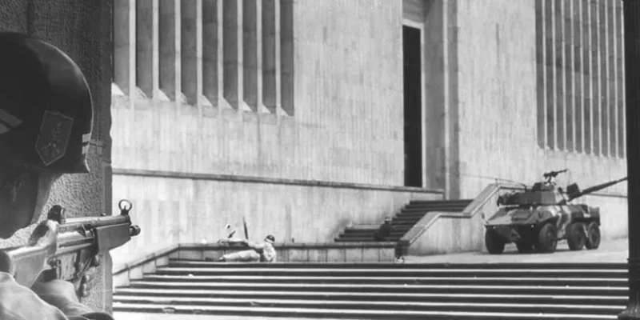

Conoce un poco sobre la toma del palacio de justicia
Toma del palacio de justicia
Inicia en Cauca, al darse la batalla Yarumales, este hecho ocurrió entre diciembre de 1984 a enero de 1985, cuando el presidente Belisario Betancur había realizado un tratado de paz con el M-19, pero el ejercito al incumplir con lo pactado se dio la batalla mencionada anteriormente, gracias a que el presidente no cumplió con lo acordado el M-19 decide hacer la toma del palacio de justicia el 6 de noviembre de 1985 para darse a conocer.

Álvaro Fayad delgado cofundador del M-19, decide tomar el palacio de justicia. Carlos Pizarro quien era el comándate general en ese momento termina aceptando esta decisión, aunque dice no estar de acuerdo. Este evento desato múltiples fallecimientos de ciudadanos inocentes, como: Cristina del pilar Guarín, Luz Mary Portela, Lucy Amparo Oviedo y Rosa Ana Torres, quienes trabajan en la cafetería del palacio de justicia.